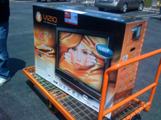
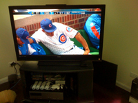
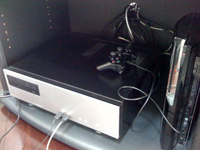

New TV
Posted May 16 2008 3:53PM by Michael
I finally have decided to show the world my new TV. Ever since I interned last summer, I decided that after I graduated I would buy a big HDTV. While I was tempted many times during the year, I held out. Pretty much the first day I could once I got back, I went and bought it.
The TV of choice was the Vizio 47" VO47L 1080p LCD, purchased at CostCo. I decided it had the best price/performance ratio of LCDs, and it was nice that it was 1080p (giving me some future proofing). Initially I was interested in Plasma, however I still am wary of even temporary burn in as an avid video gamer, so I decided LCD was the way to go.
When at CostCo to pick it up, it looked a lot smaller than anticipated, mostly because it was sitting by 52" TVs. However, after bringing it home, it looks monsterous again. I must say, after setting it up (and finding that Comcast finally broadcasts the local HD channels unencrypted (this didn't seem to be the case last time I checked), the quality of HDTV on a giant TV is glorious.
In fact, I don't know how I will ever go back to watching TV on a normal TV. Even smaller HDTVs now longer can compare. Granted I still have to watch all the non-local channels in standard definition, but the HD feed is so crisp, clear, and bright.
Along with the new TV, I also built a Windows Media Center (Vista Ultimate) based DVR. Once it is fully customized with plugins, not only will it be able to record (allegedly) 2 standard broadcasts and 2 HD broadcasts simultaneously, but also will include automatic commercial skipping of recorded TV as well as a built in Slingbox-type ability (WebGuide) so I can watch recorded TV as well as stream live TV. Currently I'm having some issues setting up more than 2 tuners, and the WebGuide currently isn't display streams likely due to missing codecs. I'm sure these will be fixed in the near future, however likely not too soon.